JEE Main 2026 (Session 2), 4 Apr Shift 1: worked solutions for review
Questions and options are NTA’s own images; the green option is NTA’s final key. Every solution below was written by Claude
and checked against NTA’s final key. It is not NTA’s solution. Please mark anything unclear or wrong.
Q1 · Mathematics · MCQ · ID 695278226
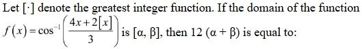
(1) 
(3) 
(4) 
Hint 1: cos−1 needs its input between −1 and 1. Split x by its integer part [x] = n.
Hint 2: −3 ≤ 4x + 2[x] ≤ 3. Try n = 0 (x in [0,1)) and n = −1 (x in [−1,0)); check that the other n give nothing.
What this tests: Domain of cos−1 combined with the greatest integer function.
1. n = 0: 0 ≤ x < 1 and 4x ≤ 3, so x in [0, 3/4].
2. n = −1: −1 ≤ x < 0 and 4x − 2 ≥ −3, so x ≥ −1/4: x in [−1/4, 0).
3. n = 1 needs 4x ≤ 1 (impossible for x ≥ 1); n = −2 needs 4x ≥ 1 (impossible for x < −1).
4. Domain = [−1/4, 3/4], so 12(α + β) = 12 × 1/2 = 6.
Answer: (1)
If this felt hard: Revise 'Inverse Trigonometric Functions' (domains). For [x] questions, fixing [x] = n is the standard move.
Claude’s answer: 1 · NTA final key: 1 · agrees · Answer recomputed with SymPy (tools/verify_pyq_solutions.py)
Q2 · Mathematics · MCQ · ID 695278227
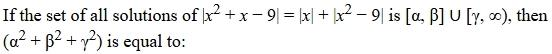
(1) 
(2) 
(3) 
Hint 1: Notice x2 + x − 9 = x + (x2 − 9). When is |a + b| = |a| + |b|?
Hint 2: |a + b| = |a| + |b| exactly when a and b have the same sign (ab ≥ 0). So you need x(x2 − 9) ≥ 0.
What this tests: Modulus equations: |a + b| = |a| + |b| ⇔ ab ≥ 0.
1. With a = x and b = x2 − 9: the equation holds iff x(x2 − 9) ≥ 0.
2. x(x − 3)(x + 3) ≥ 0 gives x in [−3, 0] ∪ [3, ∞).
3. α = −3, β = 0, γ = 3, so α2 + β2 + γ2 = 18.
Answer: (2)
If this felt hard: This property saves a lot of case-work. Revise 'Relations and Functions' (modulus) and sign charts for inequalities.
Claude’s answer: 2 · NTA final key: 2 · agrees · Answer recomputed with SymPy (tools/verify_pyq_solutions.py)
Q3 · Mathematics · MCQ · ID 695278228
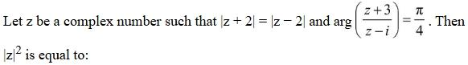
(1) 
(2) 
(3) 
(4) 
Hint 1: |z + 2| = |z − 2| means z is equally far from −2 and 2. Where can z be?
Hint 2: z lies on the imaginary axis: z = iy. arg(w) = π/4 means w has equal, positive real and imaginary parts.
What this tests: Locus |z − a| = |z − b| (perpendicular bisector) and the argument of a complex number.
1. z = iy. Then (z + 3)/(z − i) = (3 + iy)/(i(y − 1)) = (y − 3i)/(y − 1).
2. arg = π/4: real part = imaginary part > 0, so y/(y − 1) = −3/(y − 1), giving y = −3 (and then both parts are 3/4 > 0 ✓).
3. |z|2 = 9.
Answer: (1)
If this felt hard: When using arg = π/4, check that both parts are positive, not just equal. Revise 'Complex Numbers'.
Claude’s answer: 1 · NTA final key: 1 · agrees · Answer recomputed with SymPy (tools/verify_pyq_solutions.py)
Q4 · Mathematics · MCQ · ID 695278229
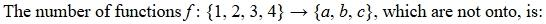
(2) 
(4) 
Hint 1: Count all functions, then subtract the onto ones.
Hint 2: Total = 34. Onto functions from 4 elements to 3 = 34 − 3·24 + 3·14 = 36.
What this tests: Counting functions and onto functions (inclusion–exclusion).
1. Total functions = 81.
2. Onto functions = 81 − 48 + 3 = 36.
3. Not onto = 81 − 36 = 45.
Answer: (2)
If this felt hard: Revise 'Relations and Functions' and inclusion–exclusion in 'Permutations and Combinations'.
Claude’s answer: 2 · NTA final key: 2 · agrees · Answer recomputed with SymPy (tools/verify_pyq_solutions.py)
Q5 · Mathematics · MCQ · ID 695278230
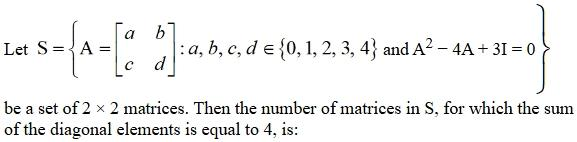
(1) 
(2) 
(3) 
(4) 
Hint 1: If trace = 4, Cayley–Hamilton says A2 − 4A + (det A)I = O. Compare with the given equation.
Hint 2: Subtracting, (3 − det A)I = O, so det A = 3: a + d = 4 and ad − bc = 3 with entries in {0, …, 4}.
What this tests: Cayley–Hamilton for 2×2 matrices and counting.
1. a + d = 4 and ad − bc = 3.
2. (a, d) = (1, 3) or (3, 1): ad = 3, so bc = 0: 9 pairs (b, c) each, 18 in all.
3. (2, 2): ad = 4, so bc = 1: only (1, 1), 1 matrix.
4. (0, 4), (4, 0): bc = −3 is impossible.
5. Total = 19.
Answer: (4)
If this felt hard: Revise the 2×2 Cayley–Hamilton form A2 − (tr A)A + |A|I = O. It turns a matrix equation into two number conditions.
Claude’s answer: 4 · NTA final key: 4 · agrees · Answer recomputed with SymPy (tools/verify_pyq_solutions.py)
Q6 · Mathematics · MCQ · ID 695278231
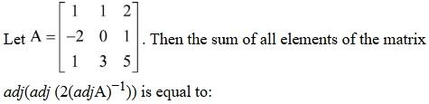
(1) 
(2) 
Hint 1: Use adj(adj B) = |B|n−2B (here n = 3) and (adj A)−1 = A/|A|.
Hint 2: |A| = −4, so 2(adj A)−1 = 2A/|A| = −A/2. Call it B and find |B|.
What this tests: Properties of the adjoint: adj(adj B) = |B|n−2B and (adj A)−1 = A/|A|.
1. |A| = −4, so B = 2(adj A)−1 = −A/2.
2. |B| = (−1/2)3(−4) = 1/2.
3. adj(adj B) = |B| B = (1/2)(−A/2) = −A/4.
4. Sum of the elements of A = 12, so the answer is −12/4 = −3.
Answer: (4)
If this felt hard: Revise 'Matrices and Determinants': adjoint properties. Working with formulas is much faster than computing adjoints.
Claude’s answer: 4 · NTA final key: 4 · agrees · Answer recomputed with SymPy (tools/verify_pyq_solutions.py)
Q7 · Mathematics · MCQ · ID 695278232
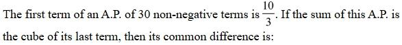
Hint 1: Let l be the last term. The sum of an AP = (n/2)(first + last).
Hint 2: S = 15(10/3 + l) = l3. Solve this cubic for l, then d = (l − a)/29.
What this tests: AP sum with first and last term.
1. 15(10/3 + l) = l3, i.e. l3 − 15l − 50 = 0, so l = 5.
2. d = (5 − 10/3)/29 = (5/3)/29 = 5/87.
Answer: (1)
If this felt hard: Revise 'Sequences and Series'. Using the last term as the unknown keeps the algebra small.
Claude’s answer: 1 · NTA final key: 1 · agrees · Answer recomputed with SymPy (tools/verify_pyq_solutions.py)
Q8 · Mathematics · MCQ · ID 695278233
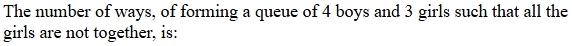
Hint 1: 'All the girls are not together' means 'not all three girls together'. Use total minus the opposite.
Hint 2: Total arrangements 7!. All three girls together: treat them as one block: 5! × 3!.
What this tests: Arrangements with a restriction (complement counting).
1. Total = 5040.
2. All girls together = 120 × 6 = 720.
3. Required = 5040 − 720 = 4320.
Answer: (4)
If this felt hard: 'Not all together' is different from 'no two together'. Read the wording carefully. Revise 'Permutations and Combinations'.
Claude’s answer: 4 · NTA final key: 4 · agrees · Answer recomputed with SymPy (tools/verify_pyq_solutions.py)
Q9 · Mathematics · MCQ · ID 695278234
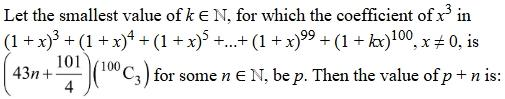
(1) 
(3) 
(4) 
Hint 1: The coefficient of x3 in (1+x)3 + … + (1+x)99 adds up to one binomial coefficient (hockey-stick identity).
Hint 2: Σr=399 rC3 = 100C4 = (97/4)·100C3. The last term adds k3·100C3.
What this tests: Hockey-stick identity for binomial coefficients.
1. Coefficient = 100C3(97/4 + k3).
2. 97/4 + k3 = 43n + 101/4, so k3 = 43n + 1.
3. Smallest natural k > 1 with k3 ≡ 1 (mod 43): k = 6 (216 = 5 × 43 + 1), so n = 5.
4. p + n = 6 + 5 = 11.
Answer: (2)
If this felt hard: Revise Σ rCk = n+1Ck+1. Then try small k for the remainder condition.
Claude’s answer: 2 · NTA final key: 2 · agrees · Answer recomputed with SymPy (tools/verify_pyq_solutions.py)
Q10 · Mathematics · MCQ · ID 695278235
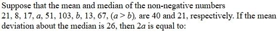
Hint 1: Use the mean to get a + b, and the median to see where a and b sit.
Hint 2: Mean 40 gives a + b = 80. Mean deviation about the median 21 is 26, so Σ|xi − 21| = 234. Expect b < 21 < a.
What this tests: Mean, median and mean deviation.
1. Sum of the known numbers = 280, so a + b = 80.
2. Deviations of the known numbers from 21 add to 183, so |a − 21| + |b − 21| = 51.
3. With b ≤ 21 ≤ a: a − b = 51, so a = 65.5 and b = 14.5 (the median is still 21 ✓).
4. 2a = 131.
Answer: (4)
If this felt hard: Revise 'Statistics': mean deviation about the median. Check that your a and b keep 21 as the median.
Claude’s answer: 4 · NTA final key: 4 · agrees · Answer recomputed with SymPy (tools/verify_pyq_solutions.py)
Q11 · Mathematics · MCQ · ID 695278236
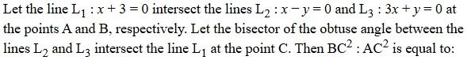
(1) 
Hint 1: A and B are where x = −3 meets the two lines. C lies on a bisector of the angle at O.
Hint 2: By the angle bisector theorem (internal or external), BC : AC = OB : OA. So BC2 : AC2 = OB2 : OA2.
What this tests: Angle bisector theorem in coordinate geometry.
1. A = (−3, −3) and B = (−3, 9).
2. OA2 = 18 and OB2 = 90.
3. C lies on a bisector of angle AOB, so BC2 : AC2 = OB2 : OA2 = 90 : 18 = 5 : 1.
Answer: (1)
If this felt hard: The theorem holds for both the internal and the external bisector, so you don't even need to decide which one is obtuse. Revise 'Straight Lines'.
Claude’s answer: 1 · NTA final key: 1 · agrees · Answer recomputed with SymPy (tools/verify_pyq_solutions.py)
Q12 · Mathematics · MCQ · ID 695278237
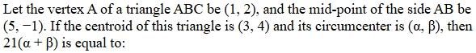
Hint 1: Find B from the midpoint, then C from the centroid.
Hint 2: B = 2(5, −1) − (1, 2) = (9, −4). C = 3(3, 4) − A − B = (−1, 14). The circumcentre is equidistant from A, B and C.
What this tests: Centroid, midpoint and circumcentre.
1. A = (1, 2), B = (9, −4), C = (−1, 14).
2. Setting PA2 = PB2 and PA2 = PC2 gives P = (94/7, 215/21).
3. α + β = 282/21 + 215/21 = 497/21, so 21(α + β) = 497.
Answer: (3)
If this felt hard: Revise 'Straight Lines'. Writing PA2 = PB2 gives straight-line equations: no square roots needed.
Claude’s answer: 3 · NTA final key: 3 · agrees · Answer recomputed with SymPy (tools/verify_pyq_solutions.py)
Q13 · Mathematics · MCQ · ID 695278238
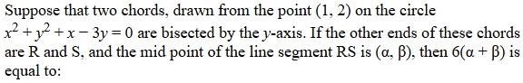
(1) 
(2) 
(3) 
(4) 
Hint 1: A chord from P(1, 2) bisected by the y-axis has its midpoint at (0, t). Where is its other end?
Hint 2: Other end = (−1, 2t − 2). It must lie on the circle.
What this tests: Chords of a circle and midpoints.
1. Put (−1, 2t − 2) in x2 + y2 + x − 3y = 0: (2t − 2)2 − 3(2t − 2) = 0.
2. 2t − 2 = 0 or 3, so R = (−1, 0) and S = (−1, 3).
3. Midpoint of RS = (−1, 3/2), so 6(α + β) = 6 × 1/2 = 3.
Answer: (2)
If this felt hard: Revise 'Conic Sections': circle. Using the midpoint to write the other end is the key trick.
Claude’s answer: 2 · NTA final key: 2 · agrees · Answer recomputed with SymPy (tools/verify_pyq_solutions.py)
Q14 · Mathematics · MCQ · ID 695278239
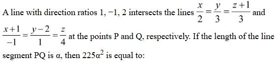
Hint 1: Write general points P (on line 1) and Q (on line 2). PQ must be parallel to (1, −1, 2).
Hint 2: P = (2s, 3s, 3s − 1), Q = (−1 − t, 2 + t, 4t). Set Q − P = λ(1, −1, 2).
What this tests: Line meeting two given lines in a given direction.
1. Solving: s = 1/5, t = −8/15, λ = −13/15.
2. Q − P = (−13/15)(1, −1, 2), so PQ2 = (169/225) × 6.
3. 225α2 = 169 × 6 = 1014.
Answer: (2)
If this felt hard: Revise 'Three Dimensional Geometry'. Three equations in s, t and λ: solve two, then check the third.
Claude’s answer: 2 · NTA final key: 2 · agrees · Answer recomputed with SymPy (tools/verify_pyq_solutions.py)
Q15 · Mathematics · MCQ · ID 695278240
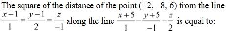
(1) 
(2) 
(3) 
(4) 
Hint 1: 'Distance along a line' means: go from the point in the given direction until you hit the first line.
Hint 2: Point on the path: (−2 + s, −8 − s, 6 + 2s). Set it equal to a point (1 + t, 1 + 2t, −t) on the first line.
What this tests: Distance of a point from a line measured along a given direction.
1. Solving gives s = −1, so the meeting point is (−3, −7, 4).
2. Distance2 from (−2, −8, 6) = 1 + 1 + 4 = 6.
Answer: (2)
If this felt hard: This is different from the perpendicular distance. Revise 'Three Dimensional Geometry'.
Claude’s answer: 2 · NTA final key: 2 · agrees · Answer recomputed with SymPy (tools/verify_pyq_solutions.py)
Q16 · Mathematics · MCQ · ID 695278241
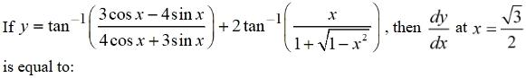
(1) 
(2) 
(3)
(4) 
Hint 1: Simplify each inverse-tan term before differentiating.
Hint 2: First term: divide by 4cos x: tan−1((3/4 − tan x)/(1 + (3/4)tan x)) = tan−1(3/4) − x. Second: put x = sin θ, so x/(1 + √(1 − x2)) = tan(θ/2).
What this tests: Simplifying inverse trig functions before differentiating.
1. First term = constant − x, with derivative −1.
2. Second term = 2 × (θ/2) = sin−1x, with derivative 1/√(1 − x2).
3. At x = √3/2: −1 + 1/(1/2) = −1 + 2 = 1.
Answer: (3)
If this felt hard: Revise 'Inverse Trigonometric Functions': the tan(A − B) form and half-angle substitutions.
Claude’s answer: 3 · NTA final key: 3 · agrees · Answer recomputed with SymPy (tools/verify_pyq_solutions.py)
Q17 · Mathematics · MCQ · ID 695278242
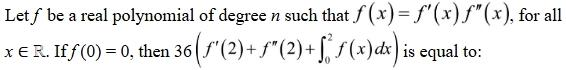
(4)
Hint 1: Compare degrees: f has degree n, f′f″ has degree (n − 1) + (n − 2).
Hint 2: n = 2n − 3, so n = 3. Try f = a(x + b)3: then f′f″ = 18a2(x + b)3.
What this tests: Polynomial functional equations (comparing degrees).
1. Degree 3. With f = a(x + b)3: 18a2 = a gives a = 1/18, and f(0) = 0 gives b = 0. So f = x3/18.
2. f′(2) = 12/18 = 2/3, f″(2) = 12/18 = 2/3, ∫ from 0 to 2 of f = 16/72 = 2/9.
3. 36(2/3 + 2/3 + 2/9) = 36 × 14/9 = 56.
Answer: (3)
If this felt hard: Comparing degrees first is the key move. Revise 'Continuity and Differentiability' and polynomial basics.
Claude’s answer: 3 · NTA final key: 3 · agrees · Answer recomputed with SymPy (tools/verify_pyq_solutions.py)
Q18 · Mathematics · MCQ · ID 695278243
(1)
(2)
(3)
(4)
Hint 1: The region is symmetric about the y-axis. For x in [0, π], which is smaller: π − x or x sin x?
Hint 2: They are equal at x = π/2. For x < π/2, x sin x is lower; for x > π/2, π − x is lower.
What this tests: Area between curves; integration by parts.
1. Area = 2[∫ from 0 to π/2 of x sin x dx + ∫ from π/2 to π of (π − x) dx].
2. ∫ x sin x from 0 to π/2 = [sin x − x cos x] = 1.
3. ∫ (π − x) from π/2 to π = π2/8.
4. Area = 2(1 + π2/8) = 2 + π2/4.
Answer: (2)
If this felt hard: Sketching both curves is the key. Revise 'Application of Integrals'.
Claude’s answer: 2 · NTA final key: 2 · agrees · Answer recomputed with SymPy (tools/verify_pyq_solutions.py)
Q19 · Mathematics · MCQ · ID 695278244
(1) 
(2) 
(3) 
(4) 
Hint 1: Both integrands are even. On [0, 2], x sin x increases from 0 to about 1.82. When is [x sin x] = 1?
Hint 2: [x sin x] = 1 from x0 (where x0 sin x0 = 1) up to 2, and 0 before that. So the integral of the floor part is 2(2 − x0).
What this tests: Integrals with the greatest integer function of a non-linear expression.
1. ∫ from −2 to 2 of |sin x| = 2(1 − cos 2).
2. ∫ from −2 to 2 of [x sin x] = 2(2 − x0).
3. Total = 2(3 − cos 2) − 2x0, so β = −2x0.
4. β sin(β/2) = (−2x0) sin(−x0) = 2x0 sin x0 = 2.
Answer: (2)
If this felt hard: You never need x0's value: keep it as a symbol and use x0 sin x0 = 1 at the end. Revise 'Definite Integrals'.
Claude’s answer: 2 · NTA final key: 2 · agrees · Answer recomputed with SymPy (tools/verify_pyq_solutions.py)
Q20 · Mathematics · MCQ · ID 695278245
(1)
(2)
(3)
(4)
Hint 1: The equation is variable separable: dy/(1 − y + y2) = (1 + x + x2) dx.
Hint 2: ∫dy/(y2 − y + 1) = (2/√3) tan−1((2y − 1)/√3). The right side from 0 to 1 is 1 + 1/2 + 1/3 = 11/6.
What this tests: Variable separable DE; completing the square for ∫dy/(y2 − y + 1).
1. (2/√3)tan−1((2y − 1)/√3) = x + x2/2 + x3/3 + C, and y(0) = 1/2 gives C = 0.
2. At x = 1: tan−1((2y − 1)/√3) = (√3/2)(11/6) = 11√3/12.
3. 2y(1) − 1 = √3 tan(11√3/12).
Answer: (3)
If this felt hard: Revise 'Integrals': ∫dx/((x − a)2 + b2) = (1/b)tan−1((x − a)/b).
Claude’s answer: 3 · NTA final key: 3 · agrees · Answer recomputed with SymPy (tools/verify_pyq_solutions.py)
Q21 · Mathematics · Numerical · ID 695278246
Hint 1: Tosses 1–6 and 4–8 overlap in tosses 4, 5, 6. Condition on how many heads fall in the overlap.
Hint 2: Let k = heads in tosses 4–6. You need 4 − k heads in tosses 1–3 and 3 − k in tosses 7–8.
What this tests: Probability with overlapping events (conditioning on the overlap).
1. Count = Σk C(3, k)·C(3, 4 − k)·C(2, 3 − k).
2. k = 1: 3 × 1 × 1 = 3; k = 2: 3 × 3 × 2 = 18; k = 3: 1 × 3 × 1 = 3. Total 24.
3. p = 24/256, so 96p = 9.
Answer: 9
If this felt hard: Splitting on the shared tosses avoids double counting. Revise 'Probability' and 'Permutations and Combinations'.
Claude’s answer: 9 · NTA final key: 9 · agrees · Answer recomputed with SymPy (tools/verify_pyq_solutions.py)
Q22 · Mathematics · Numerical · ID 695278247
Hint 1: Latus rectum of y2 = 4kx: x = k, from (k, −2k) to (k, 2k). For the ellipse: x = ae, half-length b2/a.
Hint 2: Same segment: k = ae and 2k = b2/a = a(1 − e2). So 2ae = a(1 − e2).
What this tests: Latus rectum of a parabola and an ellipse.
1. e2 + 2e − 1 = 0, so e = √2 − 1.
2. e2 = 3 − 2√2, so e2 + 2√2 = 3.
Answer: 3
If this felt hard: Revise 'Conic Sections': latus rectum lengths 4a (parabola) and 2b2/a (ellipse).
Claude’s answer: 3 · NTA final key: 3 · agrees · Answer recomputed with SymPy (tools/verify_pyq_solutions.py)
Q23 · Mathematics · Numerical · ID 695278248
Hint 1: Look for a telescoping identity: sin θ/cos 3θ in terms of tan 3θ and tan θ.
Hint 2: tan 3θ − tan θ = sin 2θ/(cos 3θ cos θ) = 2 sin θ/cos 3θ. So sin θ/cos 3θ = ½(tan 3θ − tan θ).
What this tests: Telescoping trigonometric sums.
1. A = ½[(tan 9° − tan 3°) + (tan 27° − tan 9°) + (tan 81° − tan 27°)] = ½(tan 81° − tan 3°).
2. B/A = 2.
Answer: 2
If this felt hard: Revise 'Trigonometric Functions': tan A − tan B = sin(A − B)/(cos A cos B). It is the engine of many telescoping sums.
Claude’s answer: 2 · NTA final key: 2 · agrees · Answer recomputed with SymPy (tools/verify_pyq_solutions.py)
Q24 · Mathematics · Numerical · ID 695278249
Hint 1: |ak|2 = 1 + tan2θk = sec2θk and |bk|2 = 1 + cot2θk = cosec2θk. Notice θk+1 = 2θk.
Hint 2: cosec22θ = 1/(4sin2θcos2θ) = (sec2θ + cosec2θ)/4, so sec2θ = 4cosec22θ − cosec2θ. Sum this over k and look at the first and last terms.
What this tests: Telescoping trigonometric sums over doubling angles.
1. Σk=1..n sec2θk = 4Σcosec2θk+1 − Σcosec2θk = 3Σk=1..n cosec2θk + 4(cosec2θn+1 − cosec2θ1).
2. θn+1 = 2nπ/(2n+1) = π − θ1, so cosec2θn+1 = cosec2θ1 and the bracket is 0.
3. So Σ|ak|2 = 3Σ|bk|2, and the ratio is 3.
Answer: 3
If this felt hard: This one is hard. If it felt too hard, it's a fair one to skip in the exam. The identity cosec22θ = (sec2θ + cosec2θ)/4 is worth knowing.
Claude’s answer: 3 · NTA final key: 3 · agrees · Answer recomputed with SymPy (tools/verify_pyq_solutions.py)
Q25 · Mathematics · Numerical · ID 695278250
Hint 1: Find the corners of each part separately. Is cos|x2 − 1/4| smooth?
Hint 2: cos|u| = cos u, so it is smooth. |x − 1| times something non-zero at x = 1 gives a corner at x = 1. max{6x, 2 + 3x2} has corners where 6x = 2 + 3x2.
What this tests: Points of non-differentiability of max functions and |x − a|·g(x).
1. 3x2 − 6x + 2 = 0 gives x = 1 ± 1/√3, both in (−π, π), and the slopes differ there: 2 corners.
2. |x − 1|cos(x2 − 1/4): cos(3/4) ≠ 0, so there is a corner at x = 1.
3. Total 3.
Answer: 3
If this felt hard: Remember: |x − a|·g(x) is differentiable at a only if g(a) = 0. Revise 'Continuity and Differentiability'.
Claude’s answer: 3 · NTA final key: 3 · agrees · Answer recomputed with SymPy (tools/verify_pyq_solutions.py)
Q26 · Physics · MCQ · ID 695278251
(1)
(2)
(3)
(4)
Hint 1: Least count = pitch / number of circular divisions. What is the pitch?
Hint 2: Pitch = distance moved in one full rotation = 2.5 mm/5.
What this tests: Least count of a screw gauge.
1. Pitch = 0.5 mm.
2. LC = 0.5/100 = 5 × 10−3 mm.
Answer: (4)
If this felt hard: Revise 'Units and Measurements': screw gauge.
Claude’s answer: 4 · NTA final key: 4 · agrees · Answer recomputed by script (tools/verify_pyq_solutions.py)
Q27 · Physics · MCQ · ID 695278252
(1)
(2)
(3)
(4)
Hint 1: Bulk modulus B = ΔP/(ΔV/V).
Hint 2: ΔV/V = ΔP/B.
What this tests: Bulk modulus.
1. ΔV/V = 6.3×107/2.1×109 = 0.03.
2. That is a 3% decrease.
Answer: (2)
If this felt hard: Revise 'Mechanical Properties of Solids'.
Claude’s answer: 2 · NTA final key: 2 · agrees · Answer recomputed by script (tools/verify_pyq_solutions.py)
Q28 · Physics · MCQ · ID 695278253
(1) 
(2)
(3)
(4) 
Hint 1: Same distance, so t ∝ 1/√a. If the time is 1.5 times, how do the accelerations compare?
Hint 2: asmooth/arough = 1.52 = 9/4, with asmooth = g sin 45° and arough = g(sin 45° − μ cos 45°).
What this tests: Motion on a rough incline.
1. 1/(1 − μ) = 9/4 (sin 45° = cos 45° cancels).
2. μ = 1 − 4/9 = 5/9.
Answer: (3)
If this felt hard: Common slip: using a ratio of 1.5 instead of 1.52. Revise 'Laws of Motion' (friction).
Claude’s answer: 3 · NTA final key: 3 · agrees · Answer recomputed by script (tools/verify_pyq_solutions.py)
Q29 · Physics · MCQ · ID 695278254
(1)
(2)
(3) 
(4)
Hint 1: Energy change = total binding energy after − total binding energy before.
Hint 2: Before: 2 × (3 × 5.6) + 4 × 7.4. After: 10 × 6.1.
What this tests: Binding energy and mass change in nuclear reactions.
1. Before: 33.6 + 29.6 = 63.2 MeV. After: 61 MeV.
2. The binding energy decreases by 2.2 MeV, so the mass increases: ΔMc2 = 2.2 MeV.
Answer: (3)
If this felt hard: Revise 'Nuclei'. Multiply the per-nucleon value by the mass number before adding.
Claude’s answer: 3 · NTA final key: 3 · agrees · Answer recomputed by script (tools/verify_pyq_solutions.py)
Q30 · Physics · MCQ · ID 695278255
(1)
(2)
(3) 
(4)
Hint 1: The mass M/8 at the same density makes a sphere of radius r = R/2. The disc has mass 7M/8 and radius 2R.
Hint 2: I1 = (2/5)(M/8)(R/2)2; I2 (disc about a diameter) = (1/4)(7M/8)(2R)2.
What this tests: Moments of inertia of a sphere and a disc.
1. I1 = (2/5)(M/8)(R2/4) = MR2/80.
2. I2 = (1/4)(7M/8)(4R2) = 7MR2/8.
3. I2/I1 = (7/8) × 80 = 70.
Answer: (2)
If this felt hard: Disc about a diameter is MR2/4, not MR2/2. Revise 'System of Particles and Rotational Motion'.
Claude’s answer: 2 · NTA final key: 2 · agrees · Answer recomputed by script (tools/verify_pyq_solutions.py)
Q31 · Physics · MCQ · ID 695278256
(1)
(2)
(3)
(4)
Hint 1: Range R = u2 sin 2θ/g.
Hint 2: R ∝ sin 2θ: sin 30° : sin 60°.
What this tests: Range of a projectile.
1. Ratio = (1/2) : (√3/2) = 1 : √3.
Answer: (2), x = √3
If this felt hard: Revise 'Motion in a Plane'.
Claude’s answer: 2 · NTA final key: 2 · agrees · Answer recomputed by script (tools/verify_pyq_solutions.py)
Q32 · Physics · MCQ · ID 695278257
(1)
(2)
(3)
(4)
Hint 1: For the same frequency, KEmax = h(ν − ν0). Which metal has the smallest threshold frequency?
Hint 2: The threshold frequency is where each line meets the frequency axis.
What this tests: Photoelectric effect: stopping potential vs frequency graphs.
1. X1 has the lowest threshold (1.0 × 1014 Hz).
2. Same ν means a larger ν − ν0, so the greatest KE is for X1.
Answer: (1)
If this felt hard: Revise 'Dual Nature of Matter and Radiation'.
Claude’s answer: 1 · NTA final key: 1 · agrees · Theory question: not computable, needs a teacher’s review
Q33 · Physics · MCQ · ID 695278258
(1)
(2)
(3)
(4)
Hint 1: In single-slit diffraction, minima are at yn = nDλ/a.
Hint 2: Separation between the 1st and 3rd minima = (3 − 1)Dλ/a.
What this tests: Positions of minima in single-slit diffraction.
1. y3 − y1 = 2Dλ/a.
Answer: (3)
If this felt hard: Revise 'Wave Optics'.
Claude’s answer: 3 · NTA final key: 3 · agrees · Answer recomputed by script (tools/verify_pyq_solutions.py)
Q34 · Physics · MCQ · ID 695278259
(1) 
(2) 
(3)
(4) 
Hint 1: Each string stretches by FL/(AY). Both carry the same load.
Hint 2: B has twice the length and twice the Young's modulus, so it stretches by the same amount as A.
What this tests: Young's modulus for wires in series.
1. ΔLA = 8 × 0.314/(π(2×10−4)2 × 2×1010) = 1 × 10−3 m = 1 mm.
2. ΔLB = 1 mm.
3. Total = 2 mm.
Answer: (2)
If this felt hard: Revise 'Mechanical Properties of Solids'.
Claude’s answer: 2 · NTA final key: 2 · agrees · Answer recomputed by script (tools/verify_pyq_solutions.py)
Q35 · Physics · MCQ · ID 695278260
(1)
(2)
(3)
(4)
Hint 1: Moles add up when gases mix. Use n = PV/RT for each.
Hint 2: PV/T = P1V1/T1 + P2V2/T2.
What this tests: Mixing ideal gases (conservation of moles).
1. T = PV/(P1V1/T1 + P2V2/T2) = T1T2PV/(T2P1V1 + T1P2V2).
Answer: (2)
If this felt hard: Revise 'Kinetic Theory'. Temperatures don't simply average.
Claude’s answer: 2 · NTA final key: 2 · agrees · Theory question: not computable, needs a teacher’s review
Q36 · Physics · ID 695278261
Left out of the bank: dropped (NTA).
Q37 · Physics · MCQ · ID 695278262
(1)
(2)
(3)
(4)
Hint 1: Full-scale current Ig = 20/x. What total resistance gives 30 V at the same current?
Hint 2: Rtotal = 30/Ig = 1.5x. Extra resistance goes in series.
What this tests: Extending the range of a voltmeter.
1. Extra = 1.5x − x = x/2, in series.
Answer: (1)
If this felt hard: Voltmeters get series resistors and ammeters get shunts. Revise 'Current Electricity' / 'Moving Charges and Magnetism'.
Claude’s answer: 1 · NTA final key: 1 · agrees · Answer recomputed by script (tools/verify_pyq_solutions.py)
Q38 · Physics · MCQ · ID 695278263
(1)
(2)
(3)
(4)
Hint 1: The circuit is NAND(NOT A, B). Simplify with De Morgan.
Hint 2: Y = (A′·B)′ = A + B′.
What this tests: Logic gates applied bit by bit.
1. B′ = 0101.
2. A + B′ = 1101 OR 0101 = 1101.
Answer: (1)
If this felt hard: Revise 'Semiconductor Electronics': logic gates and De Morgan's laws.
Claude’s answer: 1 · NTA final key: 1 · agrees · Answer recomputed by script (tools/verify_pyq_solutions.py)
Q39 · Physics · MCQ · ID 695278264
(1) 
(2) 
(3) 
(4) 
Hint 1: Find the images of both ends of the rod. The nearer end is at 20 cm, the farther at 30 cm.
Hint 2: 1/v + 1/u = 1/f with f = −10 cm. u = −20 gives v = −20; u = −30 gives v = −15.
What this tests: Image of an extended object along the axis of a mirror.
1. The near end is at 2f, so its image is at 20 cm.
2. Far end: 1/v = −1/10 + 1/30 = −1/15, so v = −15 cm.
3. Image length = 20 − 15 = 5 cm.
Answer: (2)
If this felt hard: Don't use magnification m2 for a long rod: image each end separately. Revise 'Ray Optics'.
Claude’s answer: 2 · NTA final key: 2 · agrees · Answer recomputed by script (tools/verify_pyq_solutions.py)
Q40 · Physics · MCQ · ID 695278265
(1)
(2) 
(3)
(4) 
Hint 1: With the battery connected, V stays fixed. Write U in terms of x.
Hint 2: U = ½CV2 = ε0AV2/(2x). Differentiate with respect to time, using dx/dt = v.
What this tests: Capacitor energy at constant voltage.
1. dU/dt = −(ε0AV2/2x2) × v.
2. So dU/dt ∝ x−2: α = −2.
Answer: (1)
If this felt hard: Decide first whether V or Q is constant. Revise 'Electrostatic Potential and Capacitance'.
Claude’s answer: 1 · NTA final key: 1 · agrees · Answer recomputed by script (tools/verify_pyq_solutions.py)
Q41 · Physics · MCQ · ID 695278266
(1)
(2)
(3)
(4)
Hint 1: The turns are spread evenly from r1 to r2. A thin ring of turns at radius r has moment I × πr2 each.
Hint 2: Turns per unit radius = N/(r2 − r1). M = ∫ from r1 to r2 of I·πr2·(N/(r2 − r1)) dr.
What this tests: Magnetic moment of a flat spiral coil (integration).
1. M = IπN(r23 − r13)/(3(r2 − r1)).
2. = 0.02 × π × 200 × (216 − 27)×10−6/(3 × 0.03) ≈ 2.64 × 10−2 A m2.
Answer: (2)
If this felt hard: Revise 'Moving Charges and Magnetism': m = NIA. Integrating over turns is the extra step here.
Claude’s answer: 2 · NTA final key: 2 · agrees · Answer recomputed by script (tools/verify_pyq_solutions.py)
Q42 · Physics · MCQ · ID 695278267
(1)
(2)
(3)
(4)
Hint 1: The two diodes point opposite ways. For DC from the battery, how many conduct?
Hint 2: Only one diode is forward biased (10 Ω); the other blocks. Total R = 100 + 10 = 110 Ω.
What this tests: RC time constant with diodes.
1. τ = RC = 110 × 20×10−6 = 2.2 × 10−3 s.
Answer: (1)
If this felt hard: Revise 'Semiconductor Electronics' and RC circuits.
Claude’s answer: 1 · NTA final key: 1 · agrees · Answer recomputed by script (tools/verify_pyq_solutions.py)
Q43 · Physics · MCQ · ID 695278268
(1)
(2)
(3)
(4)
Hint 1: Four branches each have a 27 V battery with 3 Ω (14 V + 13 V = 27 V in one of them). They are in parallel across A and B, with the 6 Ω path (two 3 Ω) as the load.
Hint 2: Identical cells in parallel: same EMF 27 V, internal resistance 3/4 Ω. Load = 6 Ω.
What this tests: Combination of cells in parallel.
1. Equivalent: 27 V with r = 0.75 Ω.
2. I = 27/(6 + 0.75) = 4 A.
3. VAB = 4 × 6 = 24 V.
Answer: (2)
If this felt hard: Revise 'Current Electricity': cells in parallel. Spotting that the branches are identical is the shortcut.
Claude’s answer: 2 · NTA final key: 2 · agrees · Answer recomputed by script (tools/verify_pyq_solutions.py)
Q44 · Physics · MCQ · ID 695278269
(1)
(2)
(3)
(4)
Hint 1: Angular resolution of a telescope: θ = 1.22λ/D.
Hint 2: D = 1.22λ/θ.
What this tests: Resolving power of a telescope.
1. D = 1.22 × 500×10−9/(5×10−7) = 1.22 m = 122 cm.
Answer: (2)
If this felt hard: Revise 'Wave Optics' (resolving power).
Claude’s answer: 2 · NTA final key: 2 · agrees · Answer recomputed by script (tools/verify_pyq_solutions.py)
Q45 · Physics · MCQ · ID 695278270
(1)
(2)
(3)
(4)
Hint 1: At the Brewster angle, the reflected light travels in the plane of incidence (x–z here) and goes back up (−z).
Hint 2: The reflected wave moves along +x and −z: phase (kx − kz − ωt). Only one option has that.
What this tests: Reflection at the Brewster angle; wave direction from the phase.
1. Incident direction lies in the x–z plane, travelling into the medium (+z). The reflected direction is +x, −z.
2. Only option 1 has the phase (kx − kz − ωt).
Answer: (1)
If this felt hard: Revise 'Wave Optics': Brewster's law. The reflected light is polarised perpendicular to the plane of incidence.
Claude’s answer: 1 · NTA final key: 1 · agrees · Theory question: not computable, needs a teacher’s review
Note: Physically the reflected E is along y only; option 1 is the only one with the right direction of travel. A teacher may want to discuss the E components.
Q46 · Physics · Numerical · ID 695278271
Hint 1: Add the two forces, then W = F·d.
Hint 2: F = (5, 2, 2) N. d = 25 × (3, −4, 0)/5 = (15, −20, 0) m.
What this tests: Work done by a constant force (dot product).
1. W = 5(15) + 2(−20) + 2(0) = 75 − 40 = 35 J.
Answer: 35
If this felt hard: Turn the direction into a unit vector before multiplying by 25 m. Revise 'Work, Energy and Power'.
Claude’s answer: 35 · NTA final key: 35 · agrees · Answer recomputed by script (tools/verify_pyq_solutions.py)
Q47 · Physics · Numerical · ID 695278272
Hint 1: A soap bubble has two surfaces. W = T × increase in total area.
Hint 2: W = 2T × 4π(r22 − r12).
What this tests: Surface energy of a soap bubble.
1. W = 8π × 3.5×10−2 × (4 − 1) × 10−4 = 8 × (22/7) × 1.05 × 10−5 = 264 × 10−6 J.
Answer: 264
If this felt hard: Revise 'Mechanical Properties of Fluids'. Remember the factor 2 for the two surfaces.
Claude’s answer: 264 · NTA final key: 264 · agrees · Answer recomputed by script (tools/verify_pyq_solutions.py)
Q48 · Physics · Numerical · ID 695278273
Hint 1: In SHM, v2 = ω2(A2 − x2). Compare with v2 = 50 − x2.
Hint 2: ω2 = 1, so ω = 1 rad/s and T = 2π/ω.
What this tests: Velocity–displacement relation in SHM.
1. ω = 1, so T = 2π = 44/7 s (π = 22/7).
2. x = 44.
Answer: 44
If this felt hard: Revise 'Oscillations'.
Claude’s answer: 44 · NTA final key: 44 · agrees · Answer recomputed by script (tools/verify_pyq_solutions.py)
Q49 · Physics · Numerical · ID 695278274
Hint 1: Find the velocity at t = 2 by integrating a = F/m from rest.
Hint 2: a = (t, 3t2), so v = (t2/2, t3). Power = F·v.
What this tests: Power from force and velocity.
1. At t = 2: v = (2, 8) and F = (4, 24).
2. P = 4 × 2 + 24 × 8 = 8 + 192 = 200 W.
Answer: 200
If this felt hard: Revise 'Work, Energy and Power': P = F·v.
Claude’s answer: 200 · NTA final key: 200 · agrees · Answer recomputed by script (tools/verify_pyq_solutions.py)
Q50 · Physics · Numerical · ID 695278275
Hint 1: Power factor cos φ = 0.5, so what is tan φ?
Hint 2: tan φ = (XL − XC)/R, with φ = 60°.
What this tests: Phase angle in an LCR circuit.
1. XL − XC = R tan 60° = 100√3 Ω (in magnitude).
2. α = 100.
Answer: 100
If this felt hard: The L, C and frequency values are not needed. Revise 'Alternating Current'.
Claude’s answer: 100 · NTA final key: 100 · agrees · Answer recomputed by script (tools/verify_pyq_solutions.py)
Q51 · Chemistry · MCQ · ID 695278276
(1)
(2)
(3)
(4)
Hint 1: At STP, 1 mol of gas occupies 22.4 L.
Hint 2: n = 1.4187/22.4. Molecules = n × 6.022 × 1023.
What this tests: Mole concept for gases.
1. n = 0.0633 mol.
2. Molecules = 0.0633 × 6.022×1023 ≈ 3.812 × 1022.
Answer: (2)
If this felt hard: Revise 'Some Basic Concepts of Chemistry'.
Claude’s answer: 2 · NTA final key: 2 · agrees · Answer recomputed by script (tools/verify_pyq_solutions.py)
Q52 · Chemistry · MCQ · ID 695278277
(1)
(2)
(3)
(4)
Hint 1: Wave number ∝ (1/n12 − 1/n22). Balmer: n1 = 2; Brackett: n1 = 4. First line: n2 = n1 + 1.
Hint 2: Balmer: 1/4 − 1/9 = 5/36. Brackett: 1/16 − 1/25 = 9/400.
What this tests: Hydrogen spectral series.
1. Ratio = (5/36)/(9/400) = 2000/324 ≈ 6.17.
2. 5 : (5/6.17) = 5 : 0.81.
Answer: (2)
If this felt hard: Revise 'Structure of Atom': spectral series (Lyman 1, Balmer 2, Paschen 3, Brackett 4).
Claude’s answer: 2 · NTA final key: 2 · agrees · Answer recomputed by script (tools/verify_pyq_solutions.py)
Q53 · Chemistry · MCQ · ID 695278278
(1)
(2)
(3)
(4)
Hint 1: Fill orbitals by the Aufbau order (ignore the real exception for Cr). After 3p6 (18 electrons), which orbital comes next?
Hint 2: 1s 2s 2p 3s 3p 4s 3d: the 19th electron enters 4s.
What this tests: Aufbau principle and quantum numbers.
1. Electron 19 is the first electron in 4s.
2. n = 4, l = 0, m = 0, s = +1/2.
Answer: (4)
If this felt hard: Revise 'Structure of Atom'. The question asks for strict Aufbau, not Cr's actual configuration.
Claude’s answer: 4 · NTA final key: 4 · agrees · Theory question: not computable, needs a teacher’s review
Q54 · Chemistry · MCQ · ID 695278279
(1) 
(2) 
(3) 
(4) 
Hint 1: Compare Cp and Cv for an ideal gas.
Hint 2: Cp − Cv = R > 0. At constant volume, no work is done, so all the heat goes into internal energy.
What this tests: Heat capacities and the first law.
1. Statement I: Cv > Cp is false.
2. Statement II: at constant volume, W = 0 and q = ΔU, which shows up as a temperature rise. True.
Answer: (4)
If this felt hard: Revise 'Thermodynamics'.
Claude’s answer: 4 · NTA final key: 4 · agrees · Theory question: not computable, needs a teacher’s review
Q55 · Chemistry · MCQ · ID 695278280
(1)
(2)
(3)
(4)
Hint 1: If you multiply a reaction by a factor, K is raised to that power.
Hint 2: K′ = K1/3.
What this tests: Equilibrium constant for a scaled reaction.
1. K′ = (2.7 × 10−5)1/3 = 3 × 10−2.
Answer: (4)
If this felt hard: Revise 'Equilibrium'.
Claude’s answer: 4 · NTA final key: 4 · agrees · Answer recomputed by script (tools/verify_pyq_solutions.py)
Q56 · Chemistry · MCQ · ID 695278281
(1) 
(2) 
(3) 
(4)
Hint 1: Count the electrons each species loses. Fe2+ → Fe3+ loses 1; each C2O42− → 2CO2 loses 2. MnO4− takes 5.
Hint 2: FeC2O4: 1 + 2 = 3. Fe2(C2O4)3: 3 × 2 = 6. FeSO4: 1. Fe2(SO4)3: 0.
What this tests: Redox titration with electron counting.
1. Total electrons = 3 + 6 + 1 + 0 = 10.
2. Moles of KMnO4 = 10/5 = 2.
Answer: (2)
If this felt hard: Revise 'Redox Reactions': n-factor method.
Claude’s answer: 2 · NTA final key: 2 · agrees · Answer recomputed by script (tools/verify_pyq_solutions.py)
Q57 · Chemistry · MCQ · ID 695278282
(1)
(2)
(3)
(4)
Hint 1: For first order, [R] = [R]0e−k1t. What fraction has decomposed?
Hint 2: Fraction decomposed = ([R]0 − [R])/[R]0.
What this tests: Integrated first-order rate law.
1. = 1 − e−k1t.
Answer: (4)
If this felt hard: Revise 'Chemical Kinetics'.
Claude’s answer: 4 · NTA final key: 4 · agrees · Theory question: not computable, needs a teacher’s review
Q58 · Chemistry · MCQ · ID 695278283
(1)
(2)
(3)
(4)
Hint 1: A− has 36 electrons, so A has 35. Which element is that?
Hint 2: Z = 35 is bromine. Mass number = protons + neutrons.
What this tests: Atomic structure and the periodic table.
1. Z = 35 (Br), A = 35 + 45 = 80.
2. Group 17, liquid at room temperature.
Answer: (1)
If this felt hard: Revise 'Structure of Atom' and 'p-Block Elements'.
Claude’s answer: 1 · NTA final key: 1 · agrees · Theory question: not computable, needs a teacher’s review
Q59 · Chemistry · MCQ · ID 695278284
(1) 
(2) 
(3) 
(4) 
Hint 1: Oxygen has no d orbitals. What is its maximum covalency? Check the oxidation states in SO2 and OF2.
Hint 2: Oxygen's maximum covalency is 4. In OF2, F is more electronegative.
What this tests: Anomalous behaviour of oxygen.
1. Statement I: covalency is usually 2 and at most 4; O is −2 in SO2 and +2 in OF2. True.
2. Statement II: oxygen's anomalous behaviour comes from its small size and high electronegativity. True.
Answer: (1)
If this felt hard: Revise 'p-Block Elements' (group 16).
Claude’s answer: 1 · NTA final key: 1 · agrees · Theory question: not computable, needs a teacher’s review
Q60 · Chemistry · MCQ · ID 695278285
(1) 
(2) 
(3) 
(4) 
Hint 1: Check each statement against the d- and f-block trends.
Hint 2: Higher oxidation states are more stable down group 6. Ce4+/Tb4+ want to gain electrons; Eu2+/Yb2+ want to lose them.
What this tests: d- and f-block trends: oxidation states, contraction.
1. A false: Mo(VI) and W(VI) are more stable than Cr(VI).
2. B true.
3. C false: Cm (5f76d1) has 8 unpaired electrons.
4. D true: actinoid contraction is larger from element to element.
Answer: (3), B and D
If this felt hard: Revise 'd- and f-Block Elements'.
Claude’s answer: 3 · NTA final key: 3 · agrees · Theory question: not computable, needs a teacher’s review
Q61 · Chemistry · MCQ · ID 695278286
(1)
(2) 
(3) 
(4) 
Hint 1: Which dichromate is hygroscopic, and so not a primary standard?
Hint 2: Na2Cr2O7 absorbs moisture, so K2Cr2O7 is used as the primary standard.
What this tests: Properties of potassium dichromate.
1. A true. B false. C true (CrO42− ⇌ Cr2O72− with pH). D true (Cr−O−Cr ≈ 126°).
Answer: (2), A, C and D
If this felt hard: Revise 'd- and f-Block Elements': K2Cr2O7.
Claude’s answer: 2 · NTA final key: 2 · agrees · Theory question: not computable, needs a teacher’s review
Q62 · Chemistry · MCQ · ID 695278287
(1) 
(2)
(3) 
(4) 
Hint 1: Water is a weak-field ligand, so all of these are high spin. Count the unpaired electrons.
Hint 2: Cr2+ d4: 4; Co2+ d7: 3; Cu2+ d9: 1; Mn2+ d5: 5. μ = √(n(n+2)).
What this tests: Spin-only magnetic moments.
1. Cr2+: 4.90 (III). Co2+: 3.87 (I). Cu2+: 1.73 (IV). Mn2+: 5.92 (II).
Answer: (4)
If this felt hard: Revise 'Coordination Compounds': μ = √(n(n+2)) BM.
Claude’s answer: 4 · NTA final key: 4 · agrees · Theory question: not computable, needs a teacher’s review
Q63 · Chemistry · MCQ · ID 695278288
(1)
(2)
(3)
(4)
Hint 1: Rank the groups by how strongly they pull electrons (−I/−R).
Hint 2: −NO2 > −CN > −COOH > −I.
What this tests: Electron-withdrawing strength of groups.
1. Increasing order: −I < −COOH < −CN < −NO2, i.e. d < b < a < c.
Answer: (3)
If this felt hard: Revise 'Basic Principles of Organic Chemistry': inductive and resonance effects.
Claude’s answer: 3 · NTA final key: 3 · agrees · Theory question: not computable, needs a teacher’s review
Q64 · Chemistry · MCQ · ID 695278289
(1)
(2)
(3)
(4)
Hint 1: Each C=O in the products came from a C=C. Rebuild the alkene by joining the carbonyl carbons in pairs.
Hint 2: 2 HCHO means two =CH2 groups. OHC−CO−CHO and CH3CO−CO−COCH3 together form a six-membered ring.
What this tests: Reverse ozonolysis.
1. The ring is built from OHC−CO−CHO (3 C) and CH3CO−CO−COCH3 (3 C, plus two CH3).
2. The two middle C=O carbons carried exocyclic =CH2 groups (giving 2 HCHO).
3. This matches the cyclohexadiene with two methyls and two exocyclic =CH2 groups in option 4.
Answer: (4)
If this felt hard: Revise 'Hydrocarbons': ozonolysis. Pair the C=O ends to rebuild the C=C bonds.
Claude’s answer: 4 · NTA final key: 4 · agrees · Theory question: not computable, needs a teacher’s review
Note: Checked by rebuilding the structure from the products; a teacher may want to confirm the option images.
Q65 · Chemistry · MCQ · ID 695278290
(1)
(2) 
(3)
(4) 
Hint 1: Recall the reagent for each named reaction.
Hint 2: Finkelstein: NaI. Swarts: SbF3. Sandmeyer: Cu2Cl2. Fittig: Na in dry ether.
What this tests: Named reactions of haloalkanes and haloarenes.
1. A-III, B-I, C-IV, D-II.
Answer: (2)
If this felt hard: Revise 'Haloalkanes and Haloarenes'. A small table of named reactions is worth making.
Claude’s answer: 2 · NTA final key: 2 · agrees · Theory question: not computable, needs a teacher’s review
Q66 · Chemistry · MCQ · ID 695278291
(1) 
(2) 
(3) 
(4) 
Hint 1: Aqueous NaOH dissolves acids and phenols, not alcohols, aldehydes or amines.
Hint 2: Phenols: II, III, IV. Acids: V, VII. IX is a benzylic alcohol (CH2OH), not a phenol.
What this tests: Acidity of phenols and carboxylic acids.
1. Soluble: II, III, IV, V, VII.
2. Not soluble: I (aldehyde), VI (amine), VIII (hydrocarbon), IX (alcohol).
3. Count = 5.
Answer: (1)
If this felt hard: Revise 'Alcohols, Phenols and Ethers': acidity. An −OH on a ring carbon is a phenol; on a CH2 it's an alcohol.
Claude’s answer: 1 · NTA final key: 1 · agrees · Theory question: not computable, needs a teacher’s review
Q67 · Chemistry · MCQ · ID 695278292
(1)
(2)
(3)
(4)
Hint 1: Br2 water with aniline brominates all the free ortho and para positions. Then the NH2 becomes N2+.
Hint 2: A = 2,4,6-tribromoaniline. With HBF4 and then NaNO2/Cu, the diazonium group is replaced by NO2.
What this tests: Bromination of aniline; diazonium replacement by NO2.
1. A = 2,4,6-tribromoaniline; B = its diazonium salt.
2. C = 2,4,6-tribromonitrobenzene = 1,3,5-tribromo-2-nitrobenzene.
Answer: (2)
If this felt hard: Revise 'Amines': diazonium salt reactions (HBF4 then NaNO2/Cu gives nitro).
Claude’s answer: 2 · NTA final key: 2 · agrees · Theory question: not computable, needs a teacher’s review
Q68 · Chemistry · MCQ · ID 695278293
(1) 
(2) 
(3) 
(4) 
Hint 1: Does maltose have a free hemiacetal OH? Does lactose?
Hint 2: In both, one glucose unit keeps its anomeric carbon free, so both are reducing sugars.
What this tests: Reducing and non-reducing disaccharides.
1. Statement I: maltose is a reducing sugar, so 'non-reducing' is false.
2. Statement II: lactose is reducing. True.
Answer: (4)
If this felt hard: Revise 'Biomolecules': sucrose is the common non-reducing disaccharide.
Claude’s answer: 4 · NTA final key: 4 · agrees · Theory question: not computable, needs a teacher’s review
Q69 · Chemistry · MCQ · ID 695278294
(1) 
(2)
(3)
(4)
Hint 1: Recall the one-letter codes R, D, K, E and which amino acids are essential.
Hint 2: R = arginine, D = aspartic acid, K = lysine, E = glutamic acid. Essential (NCERT): arginine and lysine.
What this tests: Amino acid codes and classification.
1. A-II (R, essential), B-I (D, non-essential), C-IV (K, essential), D-III (E, non-essential).
Answer: (1)
If this felt hard: Revise 'Biomolecules': essential amino acids.
Claude’s answer: 1 · NTA final key: 1 · agrees · Theory question: not computable, needs a teacher’s review
Q70 · Chemistry · MCQ · ID 695278295
(1)
(2)
(3)
(4)
Hint 1: Phenolphthalein is pink in mildly basic solution. What happens in excess NaOH?
Hint 2: Excess OH− adds to the central carbon, breaking the conjugation (carbinol form).
What this tests: Structure of phenolphthalein in acid, base and excess base.
1. X is the carbinol form with no extended conjugation, so it is colourless.
Answer: (4)
If this felt hard: Revise acid–base indicators (phenolphthalein).
Claude’s answer: 4 · NTA final key: 4 · agrees · Theory question: not computable, needs a teacher’s review
Q71 · Chemistry · Numerical · ID 695278296
Hint 1: In XeO64−, Xe is +8. How many of its 8 valence electrons are left as lone pairs?
Hint 2: Xe forms six Xe−O σ bonds and uses all its valence electrons, so there is no lone pair.
What this tests: Lewis structures of xenon compounds.
1. σ bond pairs = 6; lone pairs on Xe = 0.
2. Total = 6.
Answer: 6
If this felt hard: Revise 'p-Block Elements' (noble gases).
Claude’s answer: 6 · NTA final key: 6 · agrees · Theory question: not computable, needs a teacher’s review
Q72 · Chemistry · Numerical · ID 695278297
Hint 1: Follow the sequence: methylation, chlorination (CH3 directs ortho/para, major para), then oxidation of CH3.
Hint 2: X = p-chlorobenzoic acid (M = 156.5). With NaHCO3: 1 mol acid → 1 mol CO2.
What this tests: Friedel–Crafts, directing effects, oxidation; acid–bicarbonate stoichiometry.
1. 11.2 dm3 CO2 at STP = 0.5 mol, so 0.5 mol of acid.
2. P = 0.5 × 156.5 = 78.25 g ≈ 78 g.
Answer: 78
If this felt hard: Revise 'Hydrocarbons' (directing effects) and 'Carboxylic Acids' (NaHCO3 test).
Claude’s answer: 78 · NTA final key: 78 · agrees · Answer recomputed by script (tools/verify_pyq_solutions.py)
Q73 · Chemistry · Numerical · ID 695278298
Hint 1: Find %Br from the AgBr mass, then %H by difference.
Hint 2: Mass of Br = 3.36 × 80/188 = 1.43 g, i.e. 71.5%. C 26.7%, so H = 1.8%.
What this tests: Carius estimation and empirical formula.
1. Moles: C 26.7/12 = 2.23, H 1.8/1 = 1.8, Br 71.5/80 = 0.894.
2. Ratio C : H : Br ≈ 2.5 : 2 : 1 = 5 : 4 : 2.
3. Empirical formula C5H4Br2: 5 carbon atoms.
Answer: 5
If this felt hard: Revise 'Purification and Characterisation of Organic Compounds'. Get H by difference when it isn't given.
Claude’s answer: 5 · NTA final key: 5 · agrees · Answer recomputed by script (tools/verify_pyq_solutions.py)
Q74 · Chemistry · Numerical · ID 695278299
Hint 1: This is a basic buffer. Use pOH = pKb + log([salt]/[base]).
Hint 2: Moles: base 0.5 mmol, salt 25 mmol, so the ratio is 50.
What this tests: Henderson equation for a basic buffer.
1. pOH = 4.74 + log 50 = 4.74 + 1.70 = 6.44.
2. pH = 14 − 6.44 = 7.56 = 756 × 10−2.
Answer: 756
If this felt hard: Revise 'Equilibrium'. log 50 = log 100 − log 2 = 1.70.
Claude’s answer: 756 · NTA final key: 756 · agrees · Answer recomputed by script (tools/verify_pyq_solutions.py)
Q75 · Chemistry · Numerical · ID 695278300
Hint 1: Use the boiling-point elevation to find the moles of solute, then Raoult's law for the solvent moles.
Hint 2: ΔTb = 0.5 = Kbm, so m = 5/3 mol/kg. Then (p° − p)/p° = nsolute/(nsolute + nsolvent).
What this tests: Colligative properties: elevation of boiling point and relative lowering of vapour pressure.
1. Moles of solute in 40 g = (5/3) × 0.040 = 0.0667.
2. 10/760 = 0.0667/(0.0667 + N), so N ≈ 5.0.
Answer: 5
If this felt hard: Revise 'Solutions'.
Claude’s answer: 5 · NTA final key: 5 · agrees · Answer recomputed by script (tools/verify_pyq_solutions.py)